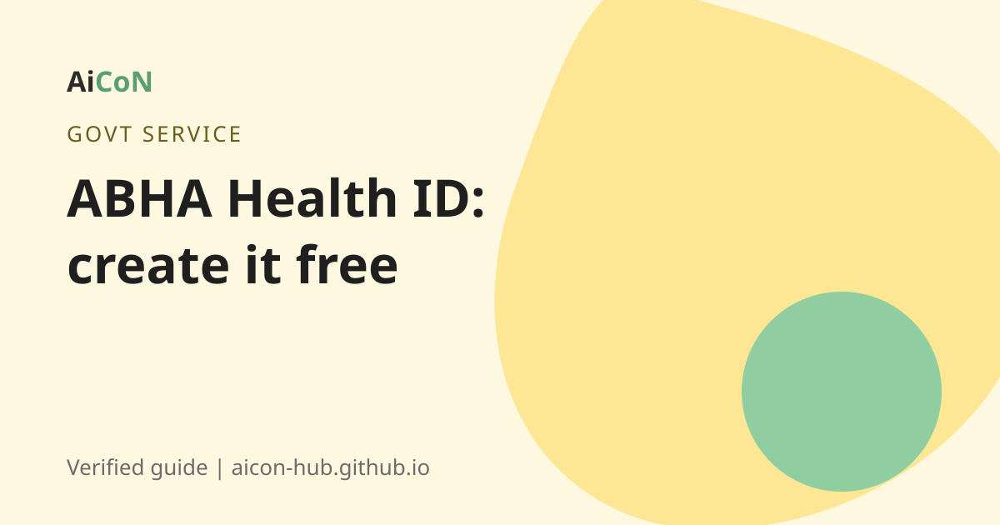

ABHA Health ID: how to create your free digital health account
ABHA is a free 14-digit health ID from the Government of India. You can use it to keep prescriptions and lab reports in one place and share them with a doctor only when you agree.

What is ABHA?
ABHA means Ayushman Bharat Health Account. It is part of the Ayushman Bharat Digital Mission (ABDM). The ABHA number is a 14-digit number that identifies you in India's digital health system. Hospitals and clinics that are connected to ABDM can accept it.
There is also an ABHA address. It is a username you choose, like yourname@abdm. You use it to share and see your health records digitally.
How popular is it?
A PIB release of 24 July 2026 says over 94.87 crore ABHAs had been created as of 20 July 2026. A later PIB release says more than 97.8 crore.
Why create one?
- Your reports and prescriptions are not lost in a paper file.
- You can link records from different hospitals.
- Records are shared with a doctor or hospital only with your consent.
- It can help in registration at connected hospitals, so there are shorter queues.
- You can link health benefits and insurance schemes to it.
How to create it with Aadhaar, step by step
- Open abha.abdm.gov.in or the ABHA app. Choose Create ABHA Number.
- Choose "Create using Aadhaar".
- Read and accept the consent. The portal says your mobile number must be linked with Aadhaar. The OTP goes to that number.
- Enter your Aadhaar number and the OTP.
- Add your communication details.
- Create your ABHA address (your username).
- Download your ABHA card.
No Aadhaar? The portal also has a driving licence option. With that option you get only an enrolment number on the portal. You must then carry your driving licence to a nearby ABDM partner facility to finish. The portal lists a helpline: 1800-11-4477.
You can also create ABHA at a hospital or health centre that does this.
Cost, eligibility and limits
| Price | Free. No one should charge you to create or activate it. |
|---|---|
| Who can use it | Any Indian resident. Aadhaar is the easiest route. |
| Needed | Aadhaar linked to your mobile number, for the OTP. |
| Limits | Records appear only if the hospital or lab is connected to ABDM. |
Stay safe
- Create ABHA only on abha.abdm.gov.in, abdm.gov.in or the official app.
- Nobody should ask for money to "activate" it.
- Never read out your OTP to a caller.
- Your records are shared only when you give consent. Check each consent request before you accept.
Frequently asked questions
Is ABHA compulsory?
No. It is a voluntary account. The portal also has an opt-out option.
Is ABHA the same as the Ayushman Bharat PM-JAY card?
No. ABHA is a digital health ID. PM-JAY is a separate health insurance scheme.
What is the difference between ABHA number and ABHA address?
The number is 14 digits. The address is a username you choose to share records.
Can I create ABHA without Aadhaar?
The portal has a driving licence option, but it needs a visit to a partner facility to finish.
Is my data safe?
Records are shared only with your consent. Read each consent request carefully.
Sources: ABDM, ABHA portal, ABHA with Aadhaar, PIB release, 24 July 2026. Checked 6 October 2026.